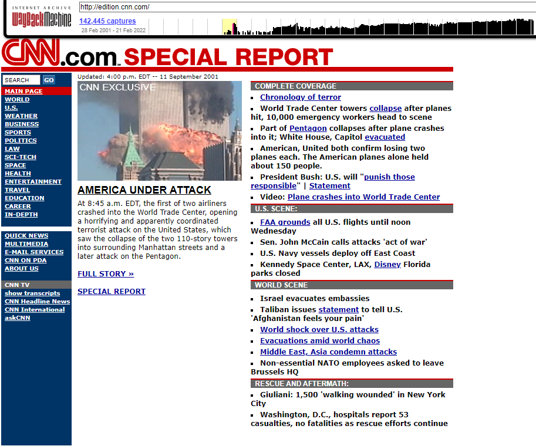
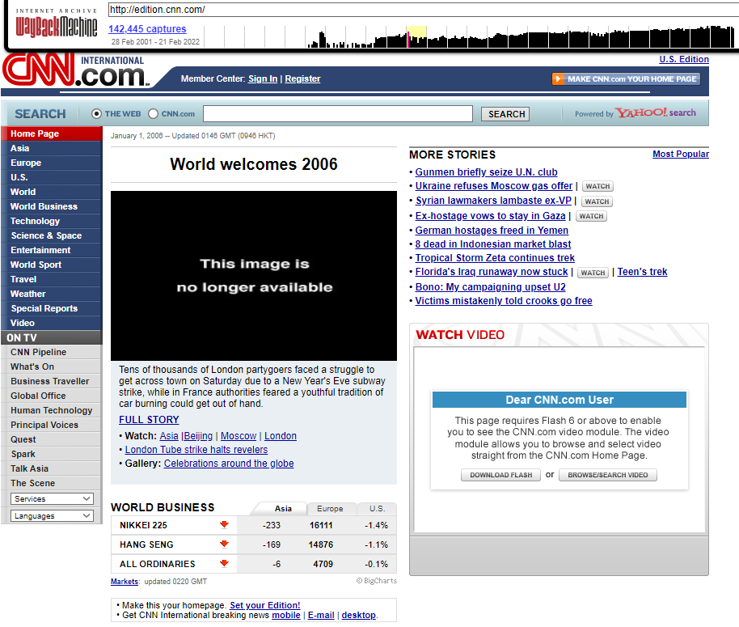
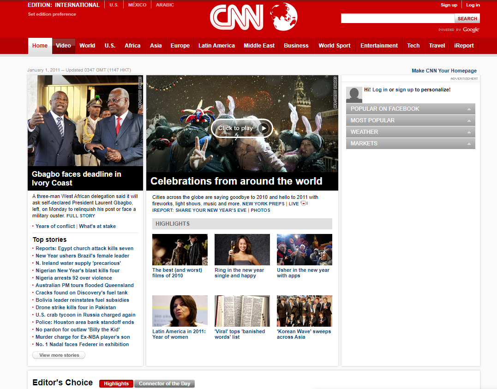

CNN ao Longo do Tempo
Layout com o passar do tempo
CNN em 2001:
CNN em 2006:
CNN em 2011:
CNN em 2016:
CNN em 2021:

Qual era o propósito?
O propósito sempre foram as noticias, a CNN sempre fez questão de passar informações para o público.
O proposito mudou?
Nunca mudou o propósito, até hoje em dia entregam noticias para o mundo todo.
Quais problemas tinha quando novo, e agora?
O site entre 2001 e 2006 tinha um layout poluído, com cores que atrapalhavam a leitura, e a organização da notícia no site era mal feita.
Hoje em dia melhorou bastante, no entanto as noticias ficam todas espalhadas pela tela.
O que eu mudaria
Eu colocaria mais noticias locais e que atinjam outros públicos, como áreas de Games, moda e etc. Também usaria mais cores e tentaria facilitar o layout do site para ser mais intuitivo e fácil de usar, já que hoje em dia o celularé bem mais usado.